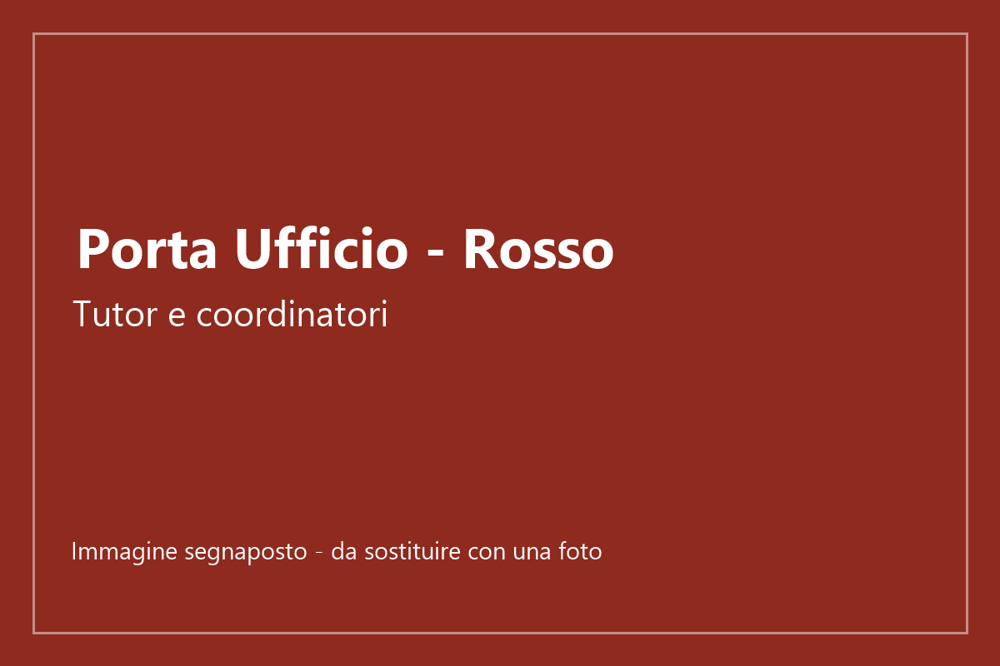

In questo ufficio trovi tutor e coordinatori del corso: persone disponibili per accompagnarti lungo tutto il percorso.
Tutor e coordinatori sono un supporto costante per gli studenti: rispondono a domande, aiutano a organizzare lo studio e le attività, offrono chiarimenti su stage, progetti e difficoltà personali o didattiche.
Il loro ruolo è fare in modo che nessuno affronti il percorso da solo.
Nell'ITS Academy (istituto tecnico superiore) Olivetti l'accompagnamento è parte integrante del metodo: classi ridotte, confronto continuo e un tutor dedicato per ogni gruppo aiutano a costruire un'esperienza formativa più personale ed efficace.

Ultimo aggiornamento: 13/11/2026